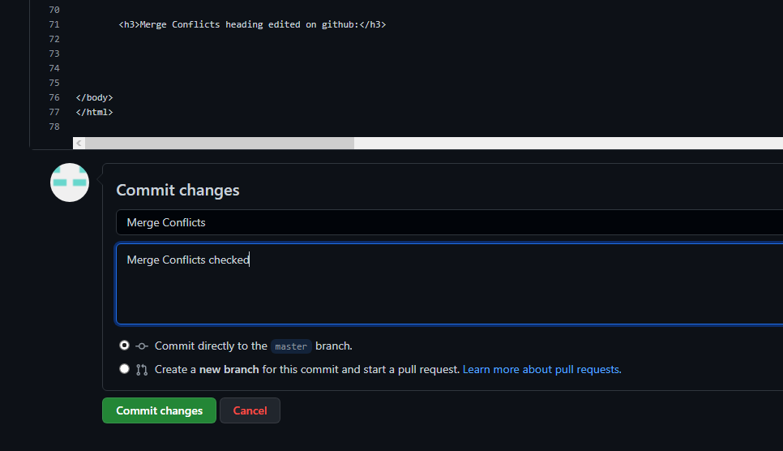

Create Repository: I added Repository name, you can name your repository whatever you want but one account on github cannot have two repositories with same name.

Create Repository: I added Repository name, you can name your repository whatever you want but one account on github cannot have two repositories with same name.
Repository Created: I successfully created the repository by clicking on the create repository button.
Repository Cloned: I successfully cloned the remote repository onto local repository by using the git clone command on cmd.

Index.html file created: I then created index.html file next to my local repository so that i can create web page from this and keep track of my work for future.

Git Add command: I then implemented Git Add command which adds a change in the working directory to the staging area. It tells Git that you want to include updates to a particular file in the next commit.

Git Commit command: I then implemented Git Commit command which is used to save your changes to the local repository. Using the "git commit" command only saves a new commit object in the local Git repository. But since it was my first commit, I had to verify my account details again, which is shown in the image below where i gave my username and email again to verify, after that I implemented git commit again and the changes were saved to my local repository and then I implemented commit command again and "First Commit" named commit was committed i.e saved to the local repository.
Git Push command: I then implemented Git Push command which is used to upload local repository content to a remote repository. Pushing is how you transfer commits from your local repository to a remote repository.
Git Status command: I then implemented Git Status command which displays the state of the working directory and the staging area. It lets you see which changes have been staged, which haven't, and which files aren't being tracked by Git. Status output does not show you any information regarding the committed project history.
H2 created in local repository: A new heading h2 created in local repository
H2 added, commited and pushed: New heading h2 was added, commited and pushed from local repository to remote repository on github
View of repository after the push:
To edit files: Click on edit button to edit file on remote repository
H2 editted and committed: After Clicking on edit button to edit file on remote repository, h2 heading was editted and then committed accordingly to save changes
Implementing Git Pull Command: When Git Pull Command is Implemented on local repository, it commmits all the changes that took place on the remote repository and saves them on the local repository, making them identical.
Changes Saved to local Repository: Changes that took place on the remote repository are saved on the local repository and now they are both identical.
Merge Conflicts h3 created: New heading h2 was added
Merge Conflicts headind edited on github and commited: New heading h3 was edited on github and then was commited as Merge Conflicts
Merge Conflicts headind edited on local repository: New heading h3 was edited on local repository and saved
Conflict added and commited:

Merge Conflicts Resolved:
Merge Conflicts commited: Resolved heading h3 was added, commited and pushed from local repository to remote repository on github
Create a Branch: Use git branch to check on which branch you are on.
Use git checkout to jump onto branches i.e; go to another bracnch or shift to another branch
Used git checkout -b newbranch to create to new child branch named 'newbranch' from the parent branch 'master'
Added style in Newbranch: After using git branch to ensure we are in the child< branch called 'Newbranch', I addded styling to the Newbranch to set it apart from the the parent branch 'Master'/p>